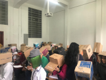
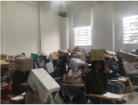

Cursos en la UN para el periodo 2020-02
Evaluación de los aprendizajes
Calentando motores
¿Qué sentido tienen a nivel educativo para usted los siguientes verbos: medir,calificar, certificar, estandarizar, evaluar, revisar y examinar? ¿Qué relación hay entre ellos? ¿Cómo se ven reflejados en sus prácticas de aula?
La evaluación es uno de los temas más polémicos siempre que cualquiera de los actores del sistema habla de educación, desde el alumno que no pasa una asignatura hasta nuestro desempeño nacional en las pruebas Pisa, la evaluación va a dar de qué hablar. Esta tensión se debe en gran medida a que no hemos incorporado la evaluación como clave del mejoramiento de nuestros procesos y la evaluación infortunadamente conserva un carácter certificador y en algunos casos aún, punitivo, antes que aportar elementos para el aprendizaje, especialmente el de maestros y estudiantes.
Veamos este vídeo que muestra la posición de algunos estados en Estados Unidos con respecto a la evaluación estandarizada. Después de verlo piense cuáles considera son los puntos más polémicos y cuál es su posición al respecto.
TEDx Talks Testing, testing. Linda Darling-Hammond. TEDxStanford. 2015 [Consultado en junio 23 de 2020]
Muros por escalar
La forma como evaluamos es un reflejo de nuestras prácticas de aula, no obstante hay fantasmas que impiden, por ejemplo, que algunos profesores que se atreven a proponer nuevas formas de relacionarse entre personas en el salón de clase y con el conocimiento a la hora de evaluar recurran a esquemas muy tradicionales en los que, verbigarcia, la autoevaluación por parte del estudiante no tiene cabida y en los que se aplican solo unas pocas pruebas cruciales que certifican si el estudiante puede o no aprobar el curso.
Adicional a ese miedo por incorporar otros aprendizajes en lo que se evalúa, hay unas connotaciones importantes en relación al tiempo. Muchos profesores al hacer la planeación de las asignaturas buscan que el tiempo para evaluar sea el mínimo posible, muy pocos docentes están dispuestos a hacer evaluaciones cada clase, retroalimentar de manera efectiva continuamente, revisar sus metas y estrategias de enseñanza y reajustarlas conforme a los resultados periódicos de ese proceso, es decir a implementar en sus cursos la evaluación formativa.
Evaluar no es calificar: la evaluación formativa
Solemos usar los verbos evaluar y calificar como sinónimos. Proponemos acostumbrarnos a diferenciarlos claramente.
En pocas palabras: calificar es "poner una nota" mientras que evaluar implica un análisis para encontrar errores de concepto, aciertos, avances y brechas en el aprendizaje, etc. En ocasiones, la evaluación desemboca en una calificación, pero esto no necesariamente es así.
La distinción entre evaluación y calificación también se logra empleando los términos Evaluación formativa vs Evaluación sumativa, respectivamente.
Un ejemplo: evaluamos cuando conversamos en clase con los estudiantes y analizamos sus opiniones o propuestas para guiarlos. Otro más: cuando atendemos una duda y y logramos identificar las dificultades de aprendizaje que la generan, hemos hecho una evaluación.
Las evaluaciones, así entendidas, forman parte integral del proceso de aprendizaje. En contraste, la calificación es la valoración (muchas veces numérica) que hacemos de los aprendizajes logrados y suele verse como un paso posterior al aprendizaje: "Evaluar lo aprendido" es una expresión usual que implica la separación en dos etapas: primero se aprende y luego se evalúa.
Entonces, ¿cómo lograr que la evaluación sea parte del proceso de aprendizaje? Bueno, diseñando actividades de aprendizaje que incorporen la evaluación (en forma de retroalimentación al estudiante) como parte de la misma actividad. Este video ilustra la idea:
Estos dos conceptos se diferencian claramente en inglés: assessment vs grading.
El vídeo lo hemos incluido también en el módulo de Actividades de aprendizaje. No es extraño: la intención es que los dos aspectos (aprendizaje y evaluación) estén fusionados.
Patologías de la calificación
La calificación incide en el aprendizaje. Aún en aquellos casos en los que se plantea como un evento posterior al aprendizaje, los estudiantes toman decisiones teniéndola como referente. La evaluación es, quizás, la gran incomprendida del proceso de formación.
A título de ilustración, Santos Guerra identifica 22 ‘desórdenes’ que afectan la evaluación, como primer paso para proponer la construcción de nuevas formas de entenderla e incorporarla en el proceso de formación. Las denomina ‘patologías’ para construir una metáfora en la que el sistema de evaluación adolece de enfermedades:
- solo se califica al alumno
- se califican solamente los resultados
- se califican solo los conocimientos
- solo se califican los resultados directos, pretendidos
- solo se califican los efectos observables
- se califica principalmente la vertiente negativa
- sólo se califican a las personas
- se califica descontextualizadamente
- se califica cuantitativamente
- se utilizan instrumentos inadecuados
- se califica de forma incohe- rente con el proceso de enseñanza/aprendizaje
- se califica competitivamente
- se califica estereotipadamente
- no se califica éticamente
- se califica para controlar
- se califica para conservar
- se califica unidireccionalmente
- no se califica desde afuera
- no se hace autoevaluación
- se califica distemporalmente
- no se hace paraevaluación y
- no se hace meta-evaluación.
Las dificultades parten desde la identificación de lo que se va evaluar: ¿el aprendizaje? ¿la persona? ¿un resultado? ¿un desempeño?. El asunto se complica al considerar el propósito de la evaluación: ¿para certificar una condición, típicamente un conocimiento? ¿para identificar a los ‘mejores’? ¿para premiar y castigar?. En medio de estas y otras preocupaciones, suele olvidarse el enorme potencial que tiene la evaluación para mejorar el aprendizaje, si se considera una parte integral de su proceso.
Miguel A. Santos Guerra. La evaluación: un proceso de diálogo, comprensión y mejora. Ediciones Aljibe, 1995.
Realmente el autor usa el término evaluación. Lo hemos transformado aquí en 'calificación' para ser consistentes con el resto del modulo.
Reflexión
- El siguiente segmento es del pensador polaco Zygmunt Bauman: ¿Cómo podemos usar la metáfora de los misiles y los objetivos para entender la evaluación en nuestras aulas universitarias? ¿Podría dar ejemplos de cómo cree que evalúan en el aula "los misiles inteligentes" y "los misiles balísticos"?
- Estas fotos circularon por internet y WhatsApp hace algún tiempo. Iban acompañadas de una queja por tener grupos tan grandes y salones pequeños donde ni siquiera se puede evaluar. ¿Cómo discutiría y analizaría estas fotos pensando en el sentido pedagógico de la evaluación?
|  |  |
Bauman, Z. (2013). Sobre la educación en un mundo líquido. Paidós: Fuenlabrada.
¿Dónde puedo aprender más?
- El Poorvu center for teaching and learning de la universidad de Yale tiene un magnifico portal sobre evaluación formativa y sumativa.
Buena parte de la brecha que existe entre la comunicación de la universidad con la eduacción básica y media, radica en que pensamos que nuestros problemas educativos no tienen nada que ver con los de ellos. La evaluación formativa viene siendo implementada en los colegios desde hace varios años ante la necesidad de conectar a profesores y estudiantes con el aprendizaje, pero también para satisfacer las demandas de mejoramiento por parte de los entes gubernamentales.
Veamos este video que muestra algunas estrategias de evaluación formativa en el día a día en el aula
Otros temas que puede revisar para actualizarse en temas de evaluación son:
- Authentic assessments: estrategias de evaluación relacionadas con los problemas del mundo real, crear y resolver problemas.
- Rúbricas: Herramientas para establecer criterios, logros y la forma cómo se va puede evaluar.
No olvide incluir en el foro todos los materiales y recursos que vas encontrando y que quiera compartir con tus colegas
Educational Partners International. Formative Assessments: Launch your classrooms. Episode 30. [Consultado en junio 23 de 2020]
Obra publicada con Licencia Creative Commons Reconocimiento Compartir igual 4.0